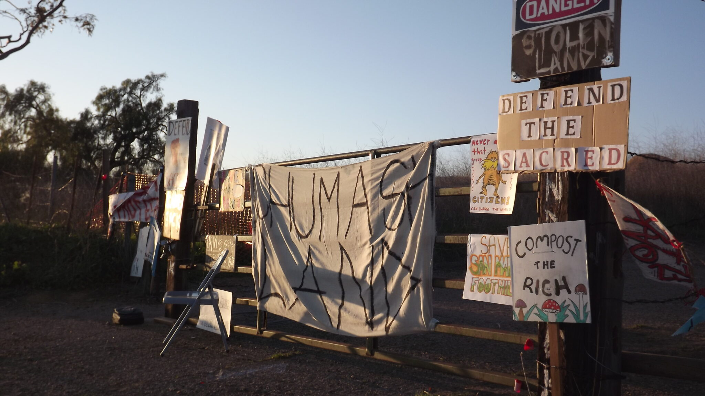

CSS Grid 1
PROTECT CALIFORNIA'S GRASSLANDS



The San Marcos Foothills Preserve is a protected area encompassing 200 acres of oak savanna and grassland between Santa Barbara and Goleta in the foothills of the Santa Ynez Mountains.
It is one of the largest and most productive grasslands in Santa Barbara County, according to Channel Islands Restoration (CIR), which has been performing habitat restoration on the preserve and the surrounding undeveloped land — including West Mesa — since 2010.
Save the San Marcos Foothills has also filed a lawsuit against Santa Barbara County for issuing easements which would permit the installation of flood control structures on county park land, according to Chytilo. The organization is concerned that these would significantly damage the undeveloped grassland and the surrounding watershed, Nancy Tubiolo, an organizer of the demonstration, said in an interview with the Nexus.
“I think our environment is so important that it’s worth the very uncomfortable legal actions that we’ve had to take,” Tubiolo said.
“This whole area — it’s like losing a friend … I’ve come up here for solace knowing that this was always here. This is like someone very dear to us and I’m like ‘Oh my gosh! They’re gonna take it away,’” Tubiolo said.
It is one of the largest and most productive grasslands in Santa Barbara County, according to Channel Islands Restoration (CIR), which has been performing habitat restoration on the preserve and the surrounding undeveloped land — including West Mesa — since 2010.
Save the San Marcos Foothills has also filed a lawsuit against Santa Barbara County for issuing easements which would permit the installation of flood control structures on county park land, according to Chytilo. The organization is concerned that these would significantly damage the undeveloped grassland and the surrounding watershed, Nancy Tubiolo, an organizer of the demonstration, said in an interview with the Nexus.
“I think our environment is so important that it’s worth the very uncomfortable legal actions that we’ve had to take,” Tubiolo said.
“This whole area — it’s like losing a friend … I’ve come up here for solace knowing that this was always here. This is like someone very dear to us and I’m like ‘Oh my gosh! They’re gonna take it away,’” Tubiolo said.